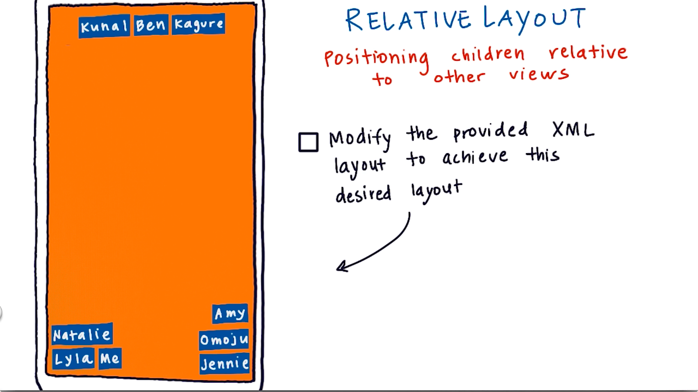

09. Relative to Other Views
Relative to Other Views
Question:
Start Quiz:

Solution:
INSTRUCTOR NOTE:
Documentation on Relative Layout parameters
Here are the words we introduced in this video:
- id
You can look up their definitions in the Vocab Glossary.